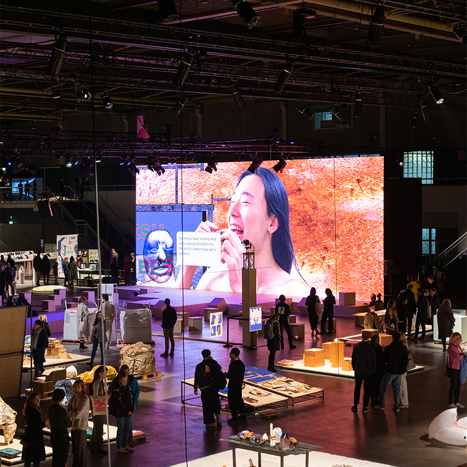
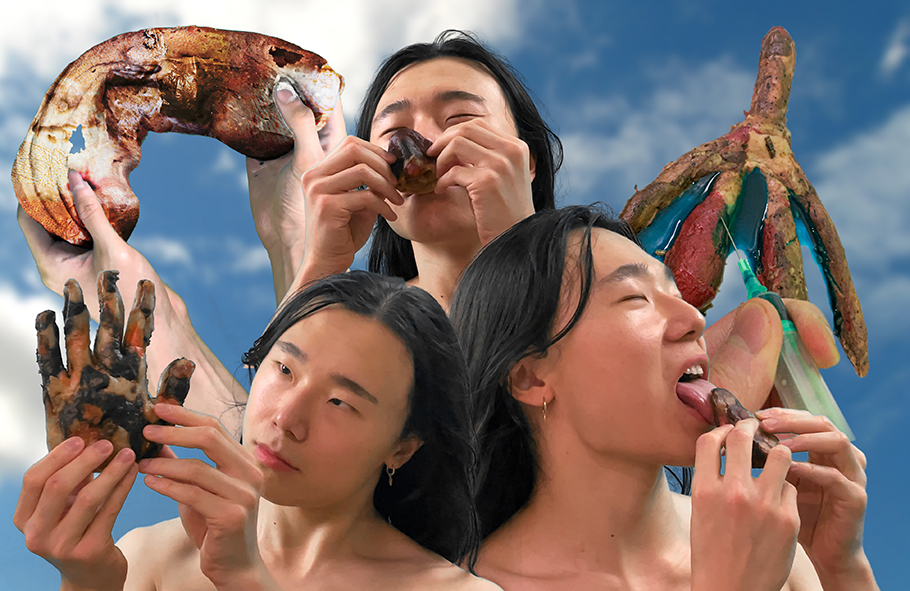

Yummy Body Truck
Graduation project at Design Academy Eindhoven, Cum Laude, Communication Department
Design Academy Eindhoven graduation show, 2021, photo: Mitchell van Eijk
Noam Youngrak Son’s YUMMY BODY TRUCK is a fictional food truck that sells edible human body parts. What sounds like cannibalism at first turns out to be a biotechno-queer fantasy of interspecies mixing – quite literally so. In the computer-generated video, the pancake-shaped head of a "fluidic chimera" tells of its creation: that a rapidly spinning blade has taken on a multitude of organisms – from bacteria and fungi to plants, insects, reptiles… and also sometimes hominids – ingested, ground up their flesh and mixed it all into a malleable paste of diverse cells, organelles, DNA, enzymes, hormones, pigments, toxins: a pool of proteins, amino acids, nucleic acids, phospholipids, and all sorts of different polymers with all sorts of unidentifiable energy states and genetic information. This mushy mass is now being modeled into human body shapes in the YUMMY BODY TRUCK – similar to the multi-species convergence from fishing waste being reshaped into desirable seafood as surimi.
“I can transform into any color, smell, taste, texture or shape depending on what I contain and what you desire. I am a piece of dough – mold me into organisms that are extinct or your fantasy creatures that never existed.” Promises the Chimera. “My plasticity will liberate your appetite”. Both narration and visuals play with our desire and disgust. But the snack from the digital meat grinder also has a sociopolitical undertone. By molding the paste into human body parts, factors such as pigmentation, endocrinological status, and toxin accumulation of the meats gain political significance: lighter or darker pigmentation from melanin indexes “race,” and estrogen residues determine “gender.”
The truck serves the edible body parts in a lunchbox, and an instructional video shows visitors how to see, smell and taste them. The flavors of pigments, hormones and toxins are meant to heighten awareness of the nuances of the bodies they eat. If, for example, the chosen carcass tastes bitter, this could indicate a higher toxin content – carnivores are more likely to accumulate environmental toxins than plants. Nevertheless, the “oral intercourse” from the YUMMY BODY TRUCK promises a sensual experience with the result of turning the consumers themselves into chimeras through the fusion of different DNA.


"Glass eels, once an abundant food ingredient in Basque, had a sudden and drastic decline in their population in the late eighties due to a reason that is still unknown. As an alternative, one company invented imitated eels in 1991. The imitated eels, looking almost identical to the glass eels, are made of various "cheaper" species of fish ground into a moldable paste. And it is now consumed nationwide. This act of amalgamating various species into a mouldable paste, and forming it into the morphology of another species is very common if you think about it. Namely surimi crab stick, kosher shrimp, vegan hamburger patty, etc.
I extrapolated this observation into a more speculative experiment and came up with this food truck. I named it Yummy Body Truck since it sells “edible human body parts.” The stall collects samples of various organisms and grinds their flesh into a moldable paste, and reshapes it into forms of human bodies. Different types of flesh in the paste can be characterized by the factors such as pigmentation, endocrinological condition, toxin accumulation. Shaping the paste into human body parts is a method to emphasize the political significance of those aspects. At this food truck, the pigmentation of white fish and brown meat turns into “race”, and estrogen residue in beef determines “gender” of the edible human body parts that it forms. The bodies are the products of hybridizing species, race, and gender. Eating those bodies is a statement of embodiment, and becoming a chimera like the mouldable paste. The flavors of pigments, hormones, and toxins from the edible human bodies communicate the ecological and political nuances of the flesh."
Portfolio - Noam Youngrak Son
For a more visual overview, check my Instagram.
| Title | Category | Year | Notes | Funding |
|---|
Noam Youngrak Son is a communication designer, design theorist, and cultural worker. Their design work encompasses small-scale publishing projects, speculative worldbuilding, workshops, lectures, writing, net art, and occasional performative interventions. As a cultural worker, they have co-organized the Ghent-based queer publishing collective Bebe Books since 2021. Son has expanded their focus from design to theory in order to critically engage with the ontology of the design industry, media, and broader material culture. This turn is informed by their observations of cultural assemblages that echo the extractive operations of capitalism on racialized and more-than-human populations. They are particularly attentive to the interconnected notions of speculation—both as an open artistic approach and as a process of value increase in capitalism. They research the tendency of the former in design to be subjugated by the latter and explore alternative methods for speculative design practices to realize their transindividual potential through collective organization and workshop facilitation. In this process, Son utilizes queer publishing as a technology for mobilizing attention beyond the financialized “scarce resource” of the attention economy. In this context, publishing extends beyond mere printed matter to encompass the maintenance of communities and the cultivation of interspecies relationships. The term "queer" here is not used as a statement of identity but as a process—small yet collective strategies of publishing that challenge the modern myth of the heroic designer.
Subscribe to the newsletter